Selected work
Projects our team
worked on.
Brand identities, campaigns and films for names we're proud to have worked with. A small selection of recent projects.
Scroll ↓
Brand identities, campaigns and films for names we're proud to have worked with. A small selection of recent projects.
Every shot in this spec film started as a reference still. Four stages, one studio, and a person directing each of them. This is the work in progress.
Build the look first. We start with stills: the car, the light, the world around it. A reference film sets the pace and the mood. Nothing is generated until we know exactly what we are making.
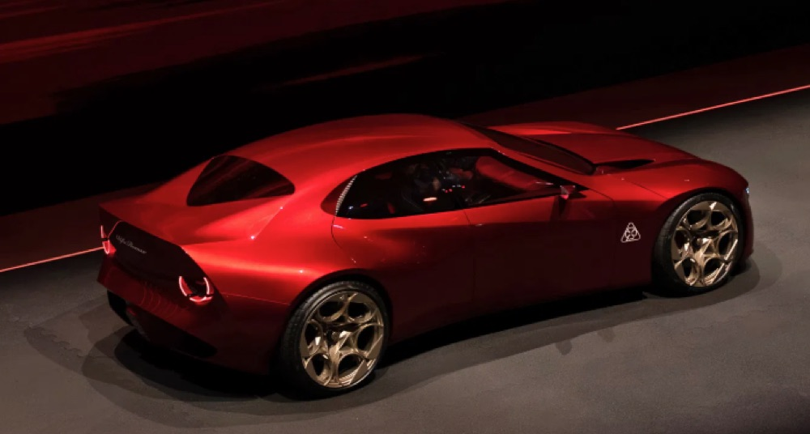
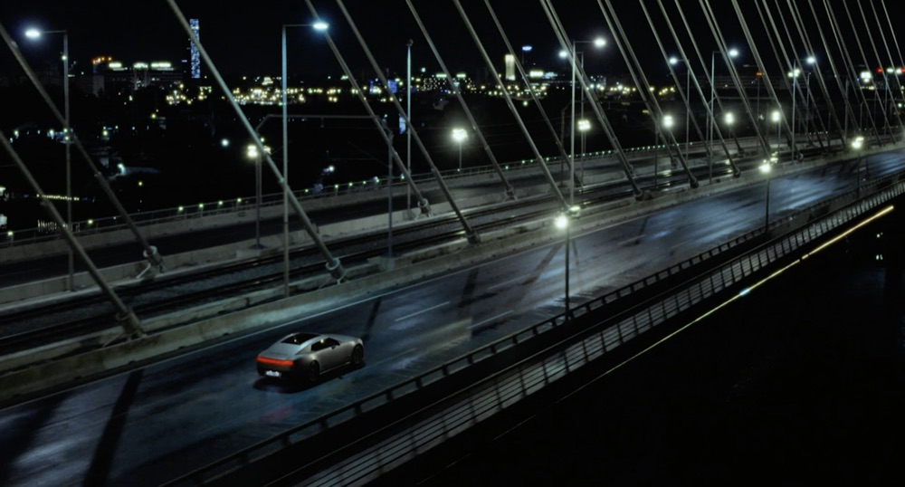
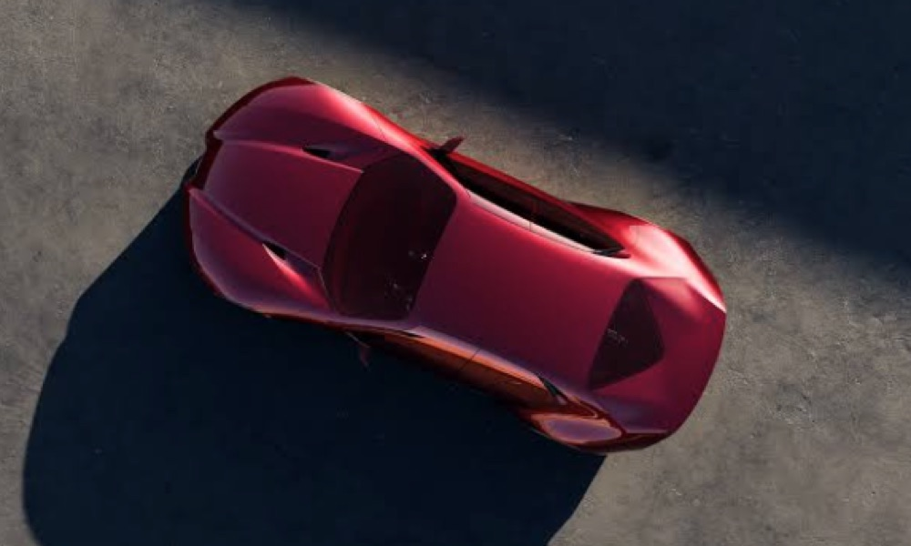
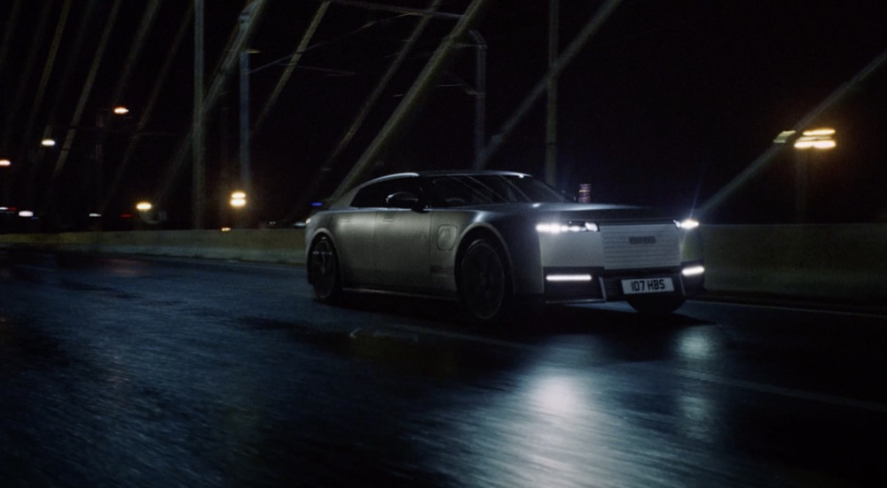
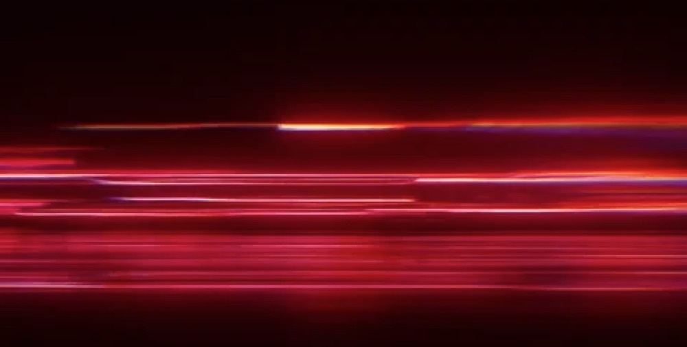
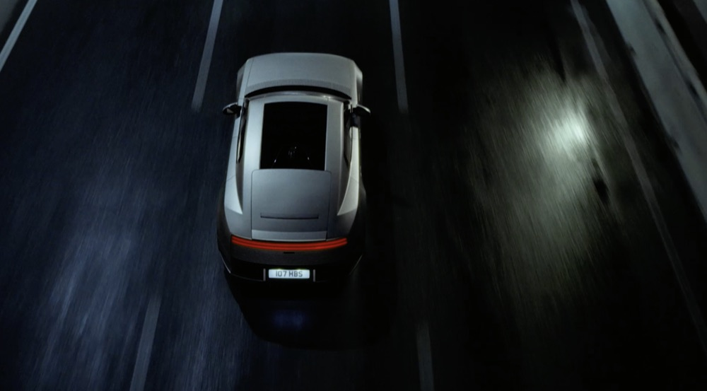
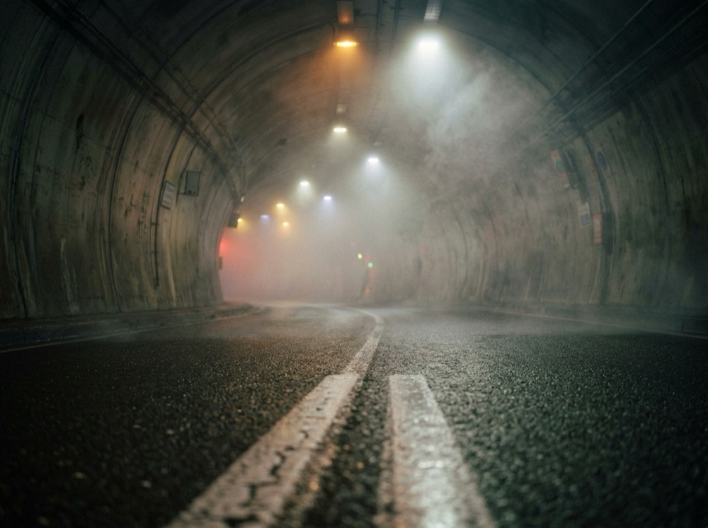
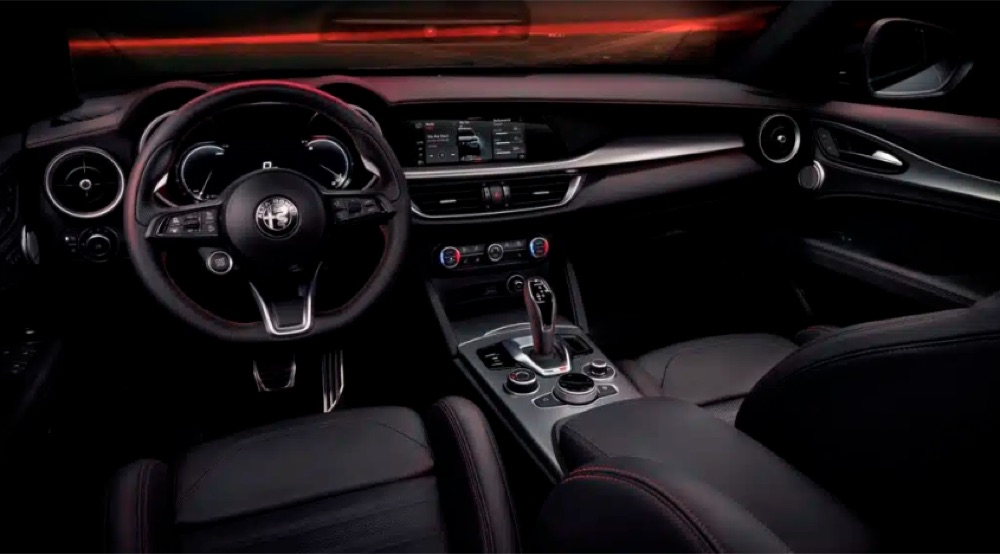
Direct the shots in Veo 3.1. Starting from the reference stills and written direction, each shot is generated as moving footage. We re-run, compare and select takes the way a director would. Nine eight-second clips are in this edit.
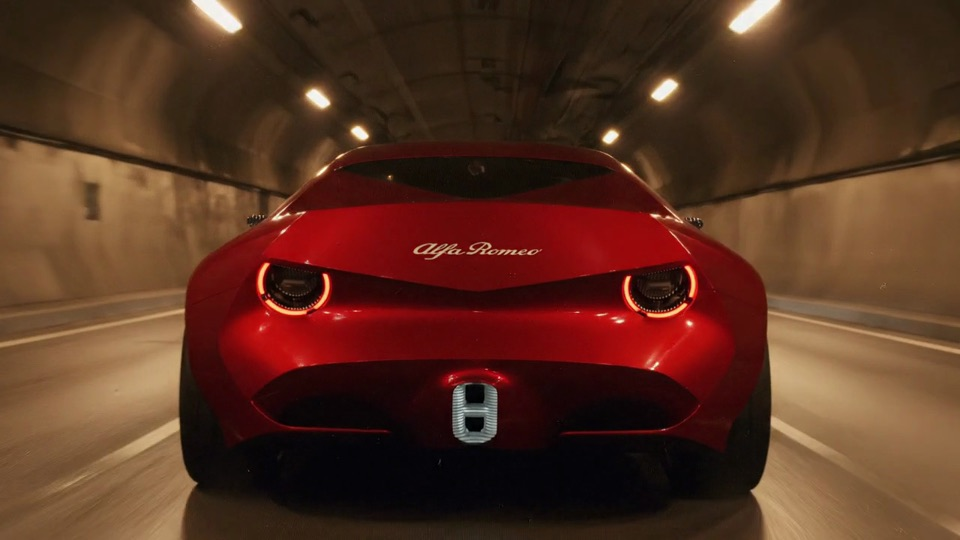
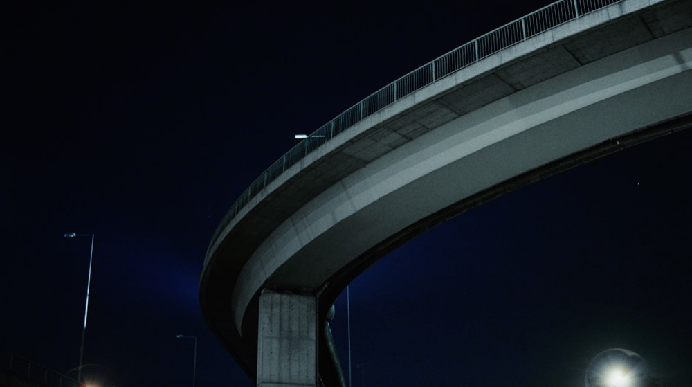
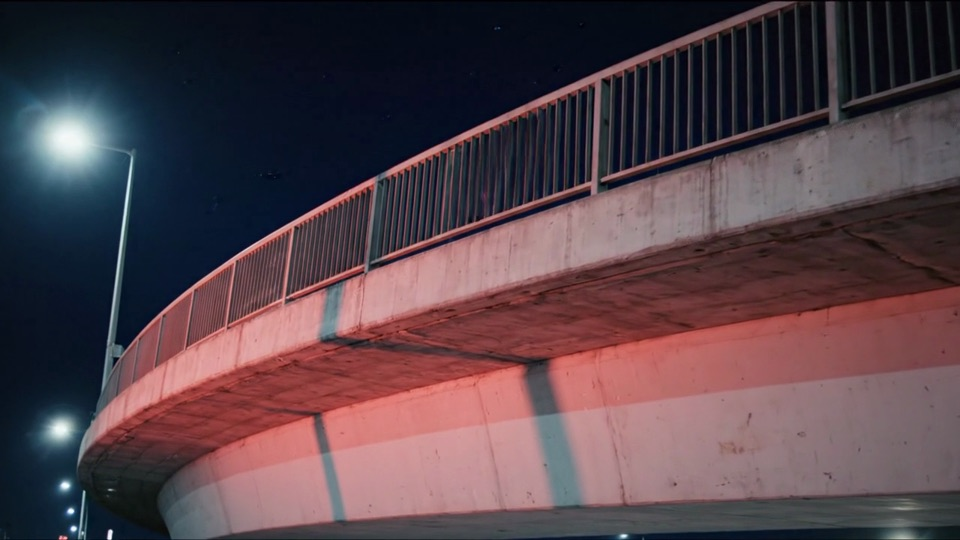
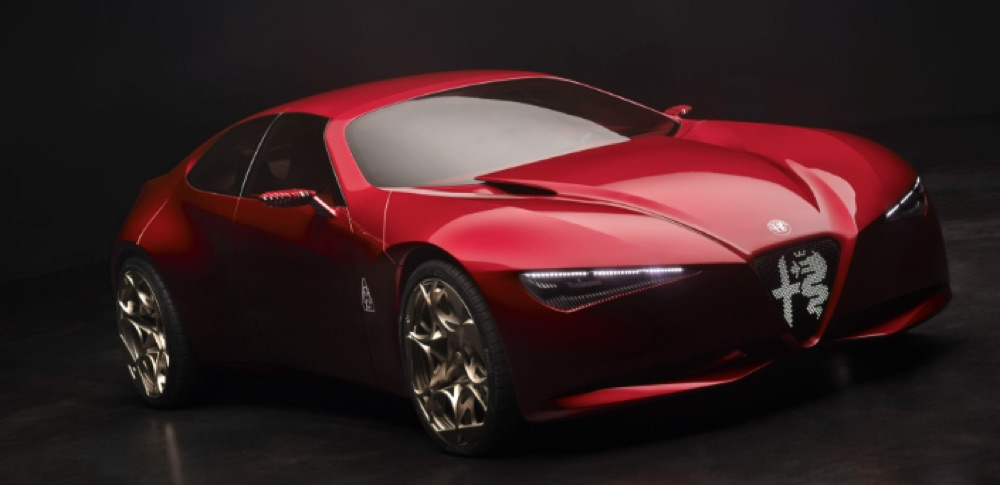
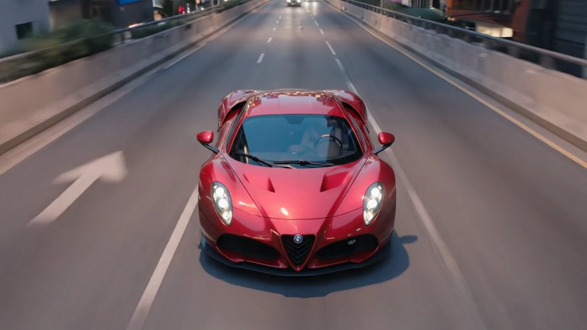
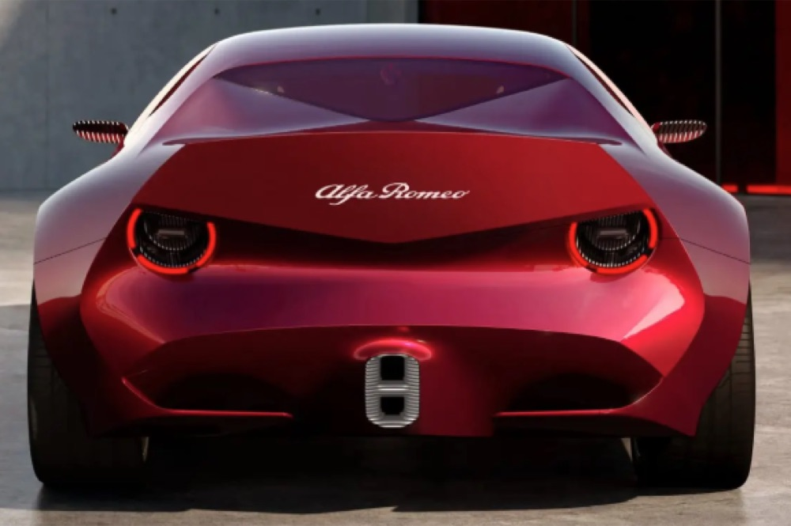
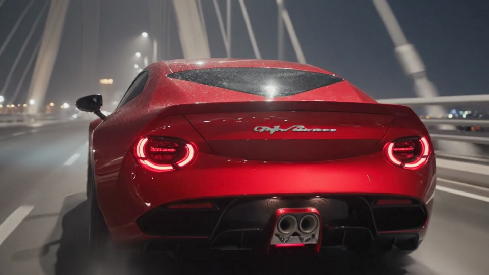
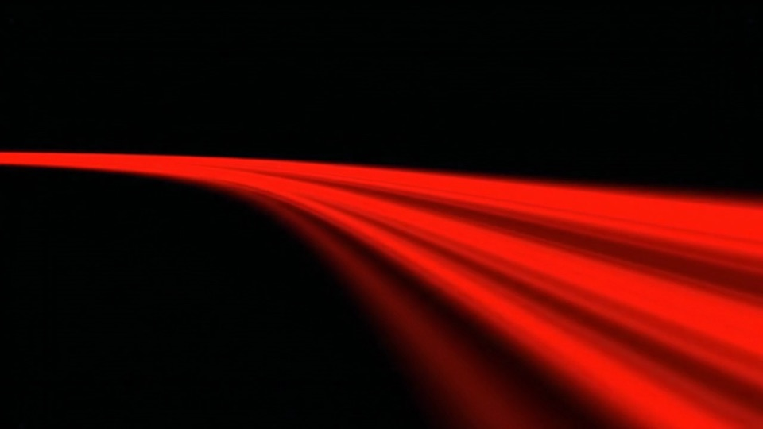
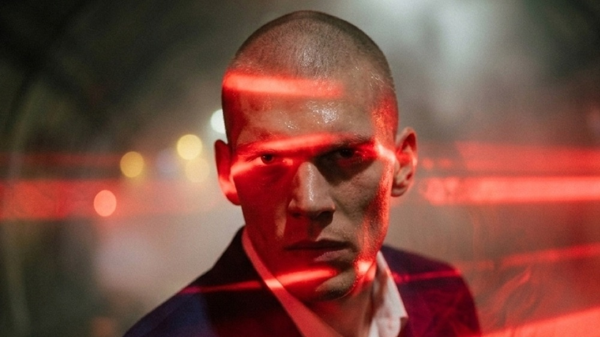
A first cut with Claude. Claude studies the reference film for pace, then assembles the clips into a first-pass edit in code: cuts timed to a pulsing score, light flashes, speed changes and graphics. A first version of the whole film exists fast, and every change after that is a quick edit.
The first-pass edit: 20 seconds at 1080p, 18 sequences. Footage is shown as its Veo 3.1 source frame. White blocks are graphics built in code. The score is composed in code too.
A human finish in Final Cut Pro or Premiere Pro. The first pass goes to an editor for the final grade, sound design and mix, titles and delivery masters. This is where taste decides what stays.
AI does the heavy lifting. Direction, taste and the final cut stay human.
Start a briefSpec film, not a client commission. Alfa Romeo and all reference imagery belong to their owners and are shown here for process only.